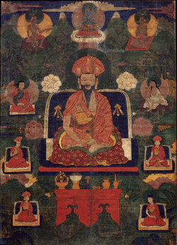

Bhutanin alkuhistoriasta ei ole paljoa tietoa sen eristäytyneen sijainnin takia.
Maahan budhalaisuus saapui 600 luvulla
Maan enisimmäisen johtajana pidetään Ngawang Namgyalia
joka oli tiibetiläinen lama ja sotilasjohtaja.
Hän onnistui yhdistämään bhutanin hallitsevat suvut yhden hallinnon alle.
Hänen toimestaan maahan perustettiin teokraattinen hallinto.
Puolustaakseen maata hän rakennutti dzongeista linnoitusketjun tiibetiläisten hyökkäyksiä vastaan.
Mongolien vallan vähennyttyä 1300-luvulla suuntaukset kilpailivat keskenään poliittisesta ja uskonnollisesta vallasta. Lopulta drukpa-suuntaus muuttui vallitsevaksi 1500-luvulla.

Shabdrung Ngawang Namgyal häntä pidetään maan ensimmäisenä hallitsijana ja maan yhdistäjänä.